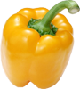
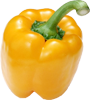

Eggplant
Eggplant
Solanales (가지목)
Solanum melongena L.


 Click this!
봄, 여름4~8월 제철한해살이풀장과품종개량
Click this!
봄, 여름4~8월 제철한해살이풀장과품종개량
| Calories | 25 kcal | Carbs | 5.88 grams | |
| Sugar | 3.53 grams | Dietary fiber | 3 grams | |
| Fat | 0.18 grams | Protein | 0.98 grams |
가지는 가지목 가지과에 속하는 관속식물입니다. 꽃은 6~9월에 자주색의 꽃이 줄기 마디마디사이에 달리며, 열매는 장과(漿果), 길이가 길고 검은 자주색으로 8~9월에 익습니다. 가지는 밭에서 재배하는 한해살이 풀로, 한자어로 ‘가자(茄子)’라고도 불립니다. 한반도에는 중국을 통해 들어와 신라 시대부터 재배되었고, 인도-히말라야 원산으로 추정되며, 우리나라 전역 및 전 세계에서 가지를 재배하고 있습니다.
가지의 열매는 오랜 시간 인간의 손에서 품종개량이 이루어졌기 때문에, 원래의 외형과 다른 모습을 하고 있습니다. 원래는 방울토마토와 비슷하게 작고 동글동글한 모양이었으나,
지속적인 품종개량 끝에 지금과 같은 모양이 된 것 입니다. 개량 이전의 모습은 계란과같은 모양이었기 때문에, 이 영향으로 가지는 영어로 ‘eggplant'라고 불립니다.
한국에서는 길쭉한 가지만 쉽게 볼 수 있지만, 원산지인 인도, 동남아시아 등에서는 품종개량 이전의 가지를 쉽게 볼 수 있다고 합니다. 그 가지들은 모양, 크기, 맛까지 가지라고 생각할 수 없을겁니다!
 3피망은 고추랑 친척인데, 왜 안맵지?
3피망은 고추랑 친척인데, 왜 안맵지?
피망은 고추과에 속하지만 캡사이신 함유량이 매우 낮거나 아예 없습니다. 스코빌(고추과 식물의 매운맛을 측정하는 데 사용되는 척도)지수는 0~300 정도로 캡사이신 함유량이 매우 낮고, 맵다는 생각이 들지 않을 정도로 매운 맛이 나지 않습니다. 그러나 이 매우 낮은 함유량의 영향인지는 모르겠으나 쓴맛과 풀냄새가 난답니다. 피망과 많이 비교되는 파프리카는 스코빌지수가 아예 0이라고 해요.
안매워요~

 

About vegetables
the facts about vegetables that we didn't know-!!!
20232504 서예린
yerino9o9seo@gmail.com